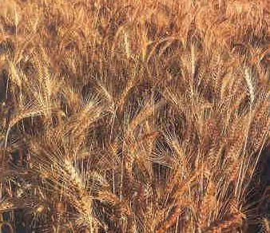

„Przez siedem dni jeść będziecie przaśniki. Już pierwszego dnia usuniecie kwas z domów waszych, bo każdy, kto od pierwszego do siódmego dnia jeść będzie to, co kwaszone, usunięty będzie z Izraela; pierwszego dnia i siódmego dnia będzie u was święte zgromadzenie, w tych dniach nie wolno wykonywać żadnej pracy. Tylko to, co każdy potrzebuje do jedzenia, wolno wam przygotować. Przestrzegajcie Święta Przaśników, gdyż w tym właśnie dniu wyprowadziłem zastępy wasze z ziemi egipskiej. Przestrzegajcie tego święta przez wszystkie pokolenia jako ustanowienie wieczne.” (2 Mojż. 12:15-17, BW)
Przez kolejne 7 dni po Święcie Paschy, spożywa się wyłącznie niekwaszony chleb (macę).

Zarówno maca jak i chamec – to chleb. Jednak jeden jest niekwaszony a drugi kwaszony. Podobieństwo wskazuje, jak zło lubi czasem udawać dobro. Proces fermentacji symbolizuje skutki grzechu, bowiem odrobina zakwasu przenosi się na całe ciasto, które bardzo szybko rośnie.
Tak człowiek w niewyobrażalnie szybkim tempie może stać się niewolnikiem grzechu. Jedzenie w to święto macy, czyli czystego, nie skażonego kwasem chleba, jest deklaracją życia w duchowej czystości oraz kontrolowania wszelkich żądz i pokus. Człowiek taki, będąc ‘przaśnym chlebem’, jest wolny od wpływów czynników chcących wchłonąć go do skażonego świata. Poza tym obrazuje to naszą przyszłą nieskażoną naturę (1 Kor. 15:42) na podobieństwo naszego Zbawiciela (Filip. 3:21). Jako, że nie jesteśmy jeszcze właścicielami przemienionych, nieskażonych ciał i w tym przypadku uwypuklona jest tu prorocza wymowa Święta Przaśników.
„(7) Wyrzućcie więc stary kwas, abyście się stali nowym ciastem, jako że przaśni jesteście. Chrystus bowiem został złożony w ofierze jako nasza Pascha. (8) Tak przeto odprawiajmy święto nasze, nie przy użyciu starego kwasu, kwasu złości i przewrotności, lecz - przaśnego chleba czystości i prawdy.” (1 Kor. 5:7-9, BT)
Zwróćmy uwagę na werset 8, w którym Apostoł Paweł w nawiązaniu do Święta Przaśników mówi: „przeto odprawiajmy święto nasze”. Te dni miały przypominać ówczesnym chrześcijanom, iż mają oni być ‘przaśni’, pozbawieni złego kwasu, czyli złości i przewrotności. Czyżby, tych którzy dziś uważają, iż „Święto Przaśników” jest nieaktualne to już nie dotyczyło?
Kiedy te lub inne biblijne święta zostały zniesione, skoro nie zniósł ich ani Jezus, ani apostołowie, ani pierwsi chrześcijanie, którzy również je obchodzili?
„My zaś odpłynęliśmy z Filippi po święcie Przaśników i w pięć dni przybyliśmy do nich do Troady, gdzie spędziliśmy siedem dni.” (Dzieje 20:6, BW).
Nie przypadkiem biblijne święta religijne są ściśle powiązane z okresem wegetacyjnym, każdorazowo będąc zwieńczeniem pewnego etapu zbioru plonów. Poszczególne cykle tych zbiorów obrazują pewne etapy w dziejach ludzkości, a ich powiązanie z poszczególnymi świętami biblijnymi pozwala odkryć zdumiewający Boski Plan naszego zbawienia, co zostanie wykazane przy omawianiu poszczególnych świąt.
Jakże więc można zaniechać obchodzenia świąt o tak głębokiej wymowie? Ci którzy uważają, iż są to święta żydowskie, które nie mają nic wspólnego z chrześcijaństwem, świadomie zubożają swój duchowy wzrost. Owszem do pewnego czasu były to święta żydowskie, ale tylko dlatego, że Pismo Święte było księgą przeznaczoną wyłącznie dla Żydów. Teraz, kiedy Bóg w swoim miłosierdziu pozwolił, aby Biblia, łącznie z Ewangelią została odsłonięta również poganom (Efez. 2:11-12), jest czas aby korzystać z pielęgnowanego poprzez długie wieki przez Żydów dziedzictwa duchowego, pochodzącego z Pisma Świętego, łącznie ze świętami, które ono przedstawia. Tym bardziej, że święta owe wskazują na rolę Jezusa w tym Bożym Planie.
„Wszystko, co znajduje się od dawna w Piśmie [Świętym], zostało napisane ku naszej nauce, abyśmy mogli mieć niezachwianą nadzieję i płynącą z Pism moc ducha.” (Rzym. 15:4, BW-P)
1. Święto Paschy i Święto Przaśników (3 Mojż. 23:5-6) – wieńczące pierwsze żniwa w roku. Zbiera się wtedy jęczmień (3 Mojż. 23:10-15).
2. Święto Pięćdziesiątnicy, Święto Żniw (Szawuot) – przypadające pięćdziesiąt dni po Święcie Paschy. Przypada wówczas czas kolejnego żniwa – tym razem pszenicy (2 Mojż. 23:16, 34:22).
3. Święto Zbioru plonów to ostatni w roku zbiór pozostałych plonów (2 Mojż. 23:16, 34:22).
Święto Pesach łącznie ze Świętem Prześników, nazywane jest Hag Ha-Macot. Miesiąc Nisan, w którym przypada Święto Paschy jest nazywany w Biblii także miesiącem Awiw (Abib) (2 Mojż. 13:4, 23:15, 34:18), albo miesiącem Kłosów (5 Mojż. 16:1). Jest to pierwszy miesiąc kalendarza religijnego Żydów.
Hebrajskie słowo ‘awiw’ to ‘wiosna’. Czas, kiedy wszystko odradza się do życia i kiedy rozpoczyna się okres wegetacyjny, a pierwszym w roku żniwem jest jęczmień.

Nakazem religijnym było przyniesienie w Święto Przaśników pierwocin z tych pierwszych plonów żniw jęczmiennych (3 Mojż. 23:9-16). Nie można było spożywać niczego z nowych plonów dopóki ich pierwociny nie zostały ofiarowane Bogu (3 Mojż. 23:14).
Z czym się to kojarzy?
„Pan stworzył mnie jako pierwociny swojego stworzenia, na początku swych dzieł, z dawna.” (Przysł. 8:22, BW)
„A jednak Chrystus został wzbudzony z martwych i jest pierwiastkiem tych, którzy zasnęli.” (1 Kor. 15:20, BW)
Jak żadne inne plony nie wyprzedzą jęczmienia – pierwocin wszystkich żniw, tak nikt w zmartwychwstaniu nie wyprzedził Jezusa (1 Kor. 5:20). Dopóki zmartwychwstały Jezus nie wstąpił pierwszy do niebios tak nikt wcześniej przed nim się tam nie znalazł (Jana 3:13).
Zmartwychwstanie naszego Pana jest niczym zapowiedź wiosny dla ludzkości – koniec zimy to koniec śmierci, teraz wszystko będzie budzić się do życia. On jest tym który toruje drogę pozostałym plonom (1 Kor. 5:22-23).

Święto Paschy i Przaśników w Starym Testamencie:
2 Mojż. 12:2-25, 42-49
2 Mojż. 34:25
3 Mojż. 23:5-8
4 Mojż. 28:16-18
5 Mojż. 16:1-8
Joz. 5:10-12
2 Król. 23:21-23
2 Kron. 30:13, 15-27
2 Kron. 35:1-19
Ezdr. 6:19-21
Ezech.45:21
Święto Paschy i Przaśników w Nowym Testamencie:
Mat. 26:2, 17
Marka 14:1, 12, 14, 16
Łuk. 22:1, 7-8, 13, 15
Jana 2:13, 6:4, 11:55, 18:28
Dzieje 12:3, 20:6